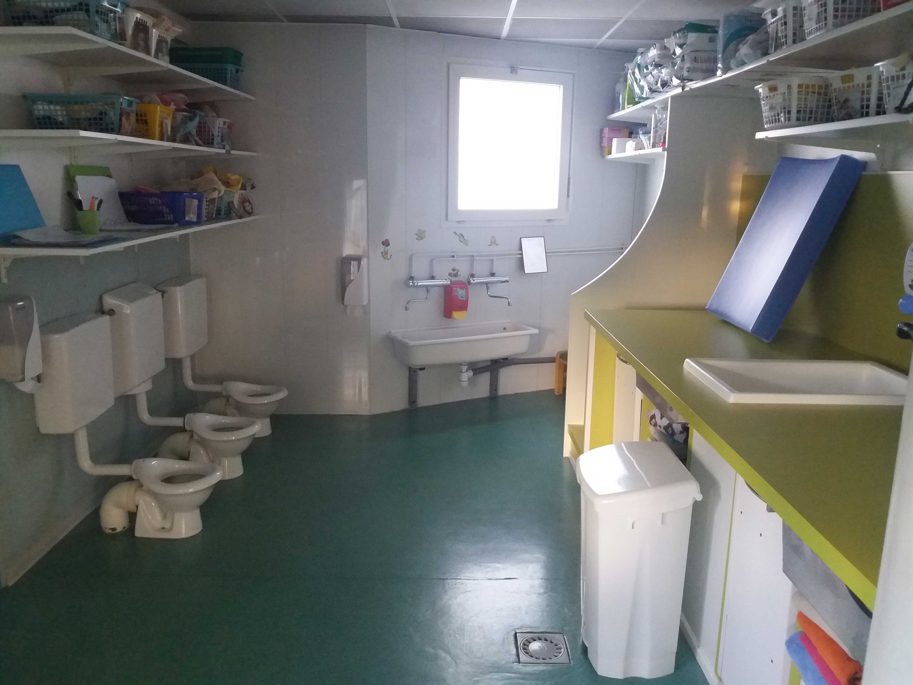
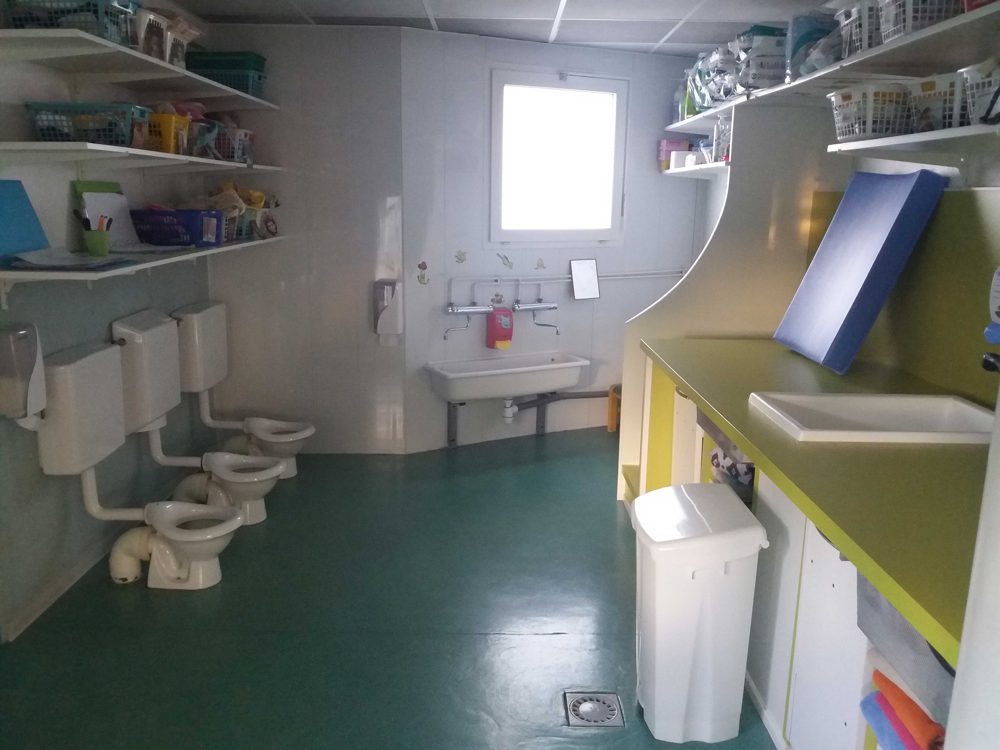

La crèche les Bisounours à Lunel-Viel, est une crèche associative présidée par un conseil d’administration, composé de parents bénévoles.
Tout au long de l’année, nous organisons des actions afin de récolter des fonds qui servent à financer des sorties pour les enfants mais également à acheter du matériel, comme des tables, des structures de motricité, des poupées, des vélos etc…
Les membres du conseil donnent leur énergie et leur temps pour que nos petits bouts profite de tout le confort nécessaire à leur bon développement. C’est pourquoi, lors de nos actions, toute aide bénévole d’autres parents est toujours la bienvenue!
 

Actions |
Date/Horaire |
Informations |
Bénévolat |
|
Apéritif de Noël |
20/12/2019 |
Remise des photos des enfants |
Aucun |
|
Vide Grenier |
09/02/2020 |
Emplacements 10€, tables 1€, |
Confection alimentaire, |
|
Loto |
07/03/2020 |
Cartons en vente à l’entrée, |
Confection alimentaire, |
|
Carnaval |
15/05/2020 |
Stand maquillage et |
Confection alimentaire, |